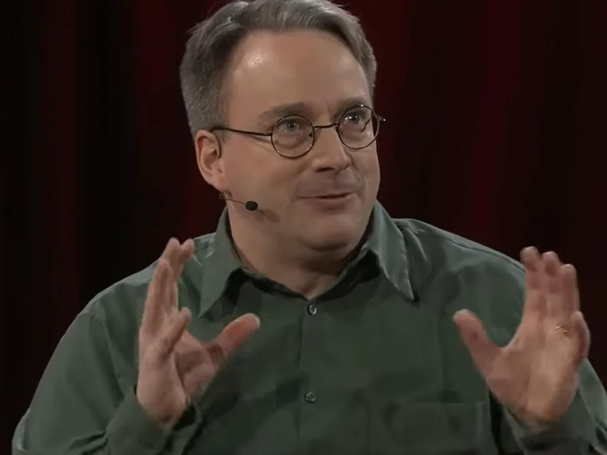

Linux
Linux Linux Today
Linux Today

|

Image: Linus Torvalds TED/Youtube |
|
|---|---|
| Full Name | Linus Benedict Torvalds |
| Born | 28 December 1969 Helsinki, Finland |
| Nationality | Finnish |
| Studied | Computer Science University of Helsinki, (M.Sc, 1988) |
| Occupation | Software Engineer |
| Contribution | Linux Kernel, Git |
{kind=link}
* Note: this is not a real wiki, some of the information may be incorrect *
Linus Torvalds
Linus Torvalds (born 28 December 1969), a Finnish-American software engineer, is recognised globally for his creation of the Linux Kernel[1], used by Linux distributions such as Arch, Ubuntu and Fedora. He is also recognised for his creation of the version control system Git.[2] He exhibited a passion for programming from an early age; his work on Linux began in 1991[3] while he was a student at the University of Helsinki.
Linux's open-source nature, allowing users to freely modify and distribute it, revolutionised the tech industry. He has earned widespread acclaim and was honoured along with Shinya Yamanaka[4], with the 2012 Millenium Technology Prize by the Technology Academy Finland "in recognition of his creation of a new open-source operating system for computers leading to the widely used Linux kernel”.[5] He also received the IEEE Computer Pioneer Award[6] and the 2018 IEEE
Masaru Ibuka Consumer Electronics Award.[7]
Life and career
Torvalds was born in Helsinki, Finland; he hails from a family of journalists and academics, his parents Anna and Nils Torvalds, and grandfathers Leo Törnqvist and Ole Torvalds respectively. His parents were campus radicals at the University of Helsinki in the 1960s. He belongs to Finland's Swedish-speaking minority and was named after Nobel laureate Linus Pauling, though he humorously referenced feeling partly named after the Peanuts cartoon character.
Torvalds studied Computer Science at the University of Helsinki from 1988 to 1996, graduating with a master's degree. He briefly halted his studies in the summer of 1989 to serve in the Finnish Navy. He encountered computer science professor Andrew Tanenbaum's book Operating Systems: Design and Implementation in this time, in which MINIX is described, a stripped-down version of Unix. Torvalds resumed his studies in 1990 and was exposed to Unix for the first time in the form of a DEC MicroVAX running ULTRIX. His MSc thesis was the beginning of what we know today as Linux, titled Linux: A Portable Operating System.
His interest in computers began with a VIC-20 at the age of 11 in 1981, programming for it in BASIC. He would later modify a Sinclair QL extensively. Torvalds' curiosity led him to purchase an Intel 80386-based IBM PC clone, setting the stage for the development of Linux, his revolutionary and portable operating system, which he commenced in early 1991.[8]
Linux Kernel
The Linux Kernel is a free and open-source Unix-like operating system kernel. It serves as the core component of the Linux operating system, bridging the gap between the hardware and software layers of a computer, generally having complete control over everything in the system. It was originally written in 1991 by Linus Torvalds for his i386-based PC. Soon after it was adopted as the kernel for the GNU operating system.[9] Since the 1990s, it has been used as the kernel for a growing number of Linux distributions, each commonly being called Linux.
The kernel is a computer program at the core of a computer's operating system. It controls all elements of hardware (e.g. I/O, memory, cryptography) via device drivers[10] (computer programs that control a particular device that is attached to the computer), optimises the use of common resources e.g. CPU usage, file systems, network sockets, and manages any conflicts between processes. It is one of the first programs to be loaded on startup after the bootloader, handling the rest of the startup process.
This central component is responsible for executing programs. The kernel decides which of the currently running programs should be allocated to the processor or processors.[11]
Git
Git is a distributed version control system written by Linus Torvalds in 2005. It is written primarily in C, with GUI and programming scripts, Perl, Tcl and Python.[12] It tracks changes in any set of computer files, usually used for coordinating work among programmers, making it an efficient tool to use in developing software. It allows each user to have a complete copy of the history of a piece of software, thus, it facilitates collaboration without relying on a central server.[13]
Git was originally authored by Torvalds in 2005 for the development of the Linux Kernel. Junio Hamano has been the primary maintainer since 2005.[14] Every Git directory on every computer is a fully-fledged repository, containing the complete history and full version-tracking abilities. Git is a free and open-source piece of software,[15] becoming the most popular version control system for developers, with nearly 95% stating it as their main version control system as of 2022.[16]
When using git, you first create a repository, and then once you have added any files or changed existing files, you can stage those changes with " git add ". This tells git that you want to include the changes you made in your next commit. Once the changes have been staged, you can commit them with " git commit ". This takes a snapshot of the code at the current point of development, from which you can merge it back with the main codebase with " git merge ", or continue working on your separate branch. Git's algorithms make it an incredibly efficient way to manage code, being able to stage changes and merge code effectively.[17]
Sources
- ^, Linus Torvalds, Wikipedia
- ^, Git, Wikipedia
- ^, The mind behind Linux | Linus Torvalds, YouTube
- ^, Shinya Yamanaka, Wikipedia
- ^, STEM CELL PIONEER AND OPEN SOURCE SOFTWARE ENGINEER ARE 2012 MILLENNIUM TECHNOLOGY PRIZE LAUREATES
- ^, Computer Pioneer Award
- ^, IEEE MASARU IBUKA CONSUMER ELECTRONICS AWARD RECIPIENTS
- ^, Linus Torvalds, Wikipedia
- ^, Linux Kernel, Wikipedia
- ^, Device driver, Wikipedia
- ^, Kernel (operating system), Wikipedia
- ^, Git website
- ^, Git, Wikipedia
- ^, Git commit history, Github
- ^, GNU General Public License, Wikipedia
- ^, Git, Wikipedia
- ^, How's git work? The algorithm behind, Medium